class: center, middle, title-slide ## CSCI 340 Operating Systems <br> ## Chapter 2: Operating System Structures .author[ Stewart Weiss<br> ] .license[ Copyright 2020 Stewart Weiss. Unless noted otherwise all content is released under a [Creative Commons Attribution-ShareAlike 4.0 International License](https://creativecommons.org/licenses/by-sa/4.0/). Background image: roof of the EPIC Museum, Dublin, by Stewart Weiss. ] --- name: cc-notice template: default layout: true .bottom-left[© Stewart Weiss. CC-BY-SA.] --- name: tinted-slide template: cc-notice layout: true class: tinted --- name:toc ### Table of Contents [About This Chapter](#summary)<br> [Chapter Objectives](#objectives)<br> [Services Provided by the System](#system-services)<br> [User Interfaces](#user-interfaces)<br> [Services For Users](#user-services-2)<br> [Schematic View of Services](#user-services-3)<br> [Command-Line Interface](#cli)<br> [Command-Line Interpreters and Terminals](#terminals)<br> [Command Implementation](#command-implementation)<br> [Graphical User Interface](#gui)<br> [Touchscreen Interface](#touchscreen)<br> [Batch System Monitor](#batch)<br> [About System Calls](#system-calls-1)<br> [Application Programming Interfaces](#apis)<br> [A Bit About POSIX](#posix)<br> [A Subtle Distinction](#technicality)<br> [Example Using System Calls](#syscall-example)<br> [The .fixed[read] System Call in UNIX](#read-syscall)<br> [System Call Implementation](#syscall-implementation-1)<br> [System Call Parameter Passing](#syscall-parameters)<br> [Under the Hood: System Calls](#syscall-implementation)<br> --- ### Table of Contents [Illustration of the Complete Flow](#syscall-complete-flow)<br> [Flow of .fixed[read] System Call in Linux](#syscall-read)<br> [Categories of System Calls](#syscall-types)<br> [Process Control](#process-syscalls)<br> [File Management](#file-syscalls)<br> [Device Management](#device-syscalls)<br> [Information Management](#info-syscalls)<br> [User and Group Management](#user-syscalls)<br> [Communication and Synchronization](#communication-syscalls)<br> [Protection](#protection-syscalls)<br> [About System Programs](#sys-programs)<br> [System Programs versus Applications](#sysprograms-apps)<br> [Categorizing System Programs](#sysprog-categories)<br> [Categorizing System Programs (2)](#sysprog-categories-1)<br> [Program Development](#prog-development)<br> [Software Libraries](#libraries)<br> [Steps in Building an Executable: Compilation](#compiling)<br> [Steps in Building an Executable: Linking, Part 1](#linking)<br> [Steps in Building an Executable: Linking, Part 2](#linking-2)<br> [Steps in Building an Executable: Dynamic Linking](#dynamic-linking)<br> [Dynamic versus Static Linking](#dynamic-vs-static)<br> [Advantages of Static Linking](#dynamic-vs-static-2)<br> [From Source to Executable, Visualized](#build-visualized)<br> --- ### Table of Contents [Portability](#portability)<br> [Solutions to Creating Portable Executables](#portability-solutions)<br> [Operating System Design](#opsys-design)<br> [Design Principles](#design-principles)<br> [How Systems Evolve](#unix-derivatives)<br> [Mechanisms and Policies](#mechanism-policy)<br> [Programming Languages for Implementation](#implementation)<br> [Operating System Structure](#opsys-structure)<br> [Monolithic Structure: UNIX](#monolithic-1)<br> [Monolithic Structure: Linux](#monolithic-2)<br> [Layered or Ring Structure](#layered)<br> [UNIX as a Ring Structure](#unix-rings)<br> [Microkernel Foundations](#microkernel-foundation)<br> [Benefits of Microkernels](#microkernel-advantages)<br> [The Early Microkernels](#microkernels)<br> [Modern Microkernels](#microkernels-modern)<br> [Loadable Kernel Modules](#modules)<br> [Hybrid Operating Systems](#hybrids)<br> [macOS](#macos-x)<br> [Bootstrapping the System: Loading the Kernel](#system-boot)<br> [Bootstrapping the System: After Kernel Load](#system-boot-2)<br> [References](#references)<br> <!--TOC_END--> --- name: summary ### About This Chapter The chapter examines operating systems from three different perspectives: - through the set of .greenbold[services] that it provides to .greenbold[users and programmers]; - through the set of .greenbold[interfaces] that it makes available to .greenbold[programmers]; - through its .greenbold[design and implementation], of interest to those who study and design operating systems. It covers the following topics: - Operating system services - User interfaces - System calls - System programs - Operating system design and implementation structures - System boot --- name: objectives ### Chapter Objectives You should be able to - identify the services provided by an operating system and whether they are directed at users, programmers, or both; - explain in detail how system calls are used to provide operating system services to programs; - explain how operating systems and system software support program development and execution, from source code to executable image; - compare and contrast the different structural designs of operating systems, such as monolithic, layered, microkernel, modular, and hybrid; and - explain the process of booting an operating system. --- name: services layout: false class: center, middle, inverse ## System Services for Users We examine the ways in which users can obtain services from an operating system. --- template: tinted-slide layout: true --- name: system-services ### Services Provided by the System Recall from Chapter 1 that the operating system's services can be categorized, for the most part, as being in one of the following groups: - .greenbold[Program execution] - .greenbold[I/O operations] - .greenbold[File systems] - .greenbold[Communication] - .greenbold[Error detection and recovery] - .greenbold[Protection and security] - .greenbold[Accounting] as illustrated below. .center[ 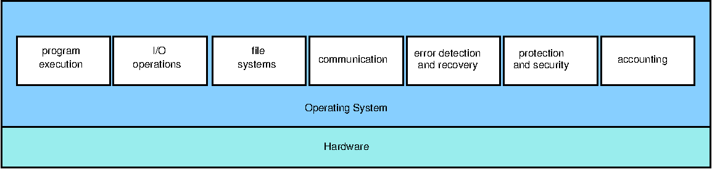 ] --- name: user-interfaces ### User Interfaces For a user to access any of these services, some type of user interface to the operating system is required. It can be any of: - .greenbold[Command-Line Interface] (.greenbold[CLI]) - .greenbold[Graphical User Interface] (.greenbold[GUI]) - .greenbold[Touch Screen] - .greenbold[Batch Monitor] These will be explained shortly. Regardless of which interface is used, users can access all types of services, although some may be more useful to users than others. --- name: user-services-2 ### Services For Users - .greenbold[Program execution]: The operating system gives users the ability to run applications and programs. This is an important category of service. - .greenbold[I/O operations]: The applications and programs run by users require input and produce output. The operating system provides the environment in which this can happen. - .greenbold[File systems]: Users and their software can create and delete files and directories, read and modify them, rename them, search through them, list and modify their properties, and share and protect them. The operating system provides support for all of this. - .greenbold[Protection and security]: Users need control of who can access their data. The operating system provides security and protection for both files and executing programs. -- Indirectly, users require services such as .greenbold[error detection and recovery] when their files get corrupted, or their programs "crash", or worse, when the system itself enters some error state. -- They also require that the system perform .greenbold[accounting] so that they can monitor things such as disk usage, memory usage, networking traffic and so on. -- Lastly, sometimes users explicitly request that the system .greenbold[manage resources], such as by requesting that certain programs run with lower priority, or by requesting that certain file systems be mounted in restricted modes. --- name: user-services-3 ### Schematic View of Services Users obtain services either directly through a user interface such as by typing a command in a command-line interpreter, or indirectly, by running an application that issues a request. In the first case, the command is executed by a .greenbold[system program]. In the second case, it might be either a system program or a .greenbold[system call] that provides the service. .center[ 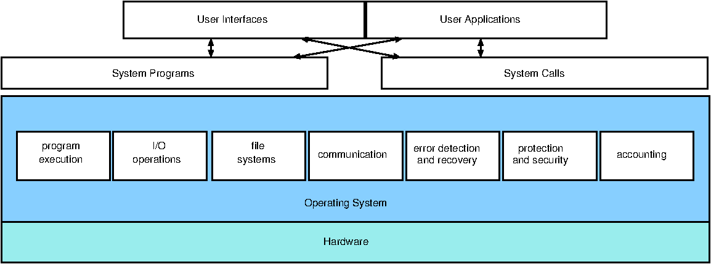 ] --- name: cli ### Command-Line Interface A .bluebold[command-line interface], (.bluebold[CLI]) is a type of user interface in which a user enters a command by entering .redbold[plain text] followed by a .redbold[newline] character. - Usually, there is a .redbold[prompt] of some kind to indicate that the user is supposed to enter the command. - The text must conform to the syntax expected by the interface. - When the newline is entered, the interface tries to run the command. -- A .bluebold[command-line interpreter] .redbold[ is a special type of command line interface] - it is a stand-alone program that can be used to interact with the operating system. A command line interface is more general - application programs such as .greenbold[emacs], .greenbold[MatLab] and .greenbold[GNU Octave] have command line interfaces, but they are not command line interpreters. -- In UNIX, a command line interpreter is called a .bluebold[shell]. A shell is not just a command line interpreter, but a .redbold[full-fledged programming language]. Examples of shells are - the .greenbold[.fixed[Bourne-again Shell]] (.fixedblue[bash]), - the .greenbold[.fixed[C Shell]] (.fixedblue[csh]), and - the original .greenbold[.fixed[Bourne shell]] (.fixedblue[sh]). -- .redbold[ A command-line interpreter can be run in a text terminal, which is a] .redbold[terminal that transmits data one character at a time, and can only display characters]. --- name: cli-activity count: false class: breakout ### Command-Line Interface Activity - What other shells are available in Linux systems? Make a list of them. - Of the shells that you found, which are .greenbold[free and open source] shells? - What is the name of the person who wrote the very first shell and when was it written? --- name: terminals ### Command-Line Interpreters and Terminals To use a CLI, the user must open a .greenbold[terminal] or a .greenbold[pseudo-terminal] window.super[1]. .footnote[ 1 You can also use a remote login program such as .fixedblue[ssh] to remotely login to a system, in which case you are automatically given a shell session. ] --- name: terminal-window1 template: terminals count: false .left-column-large[ 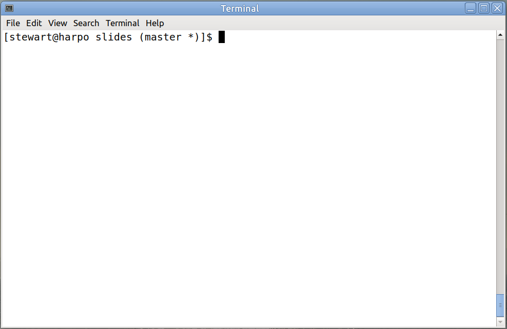 ] .right-column-small[ In Linux, there is an application named .fixedblue[Terminal] that opens a window in which you can run a shell such as .fixedblue[bash]. ] --- name: terminal-window2 template: terminals count: false .left-column-large[ 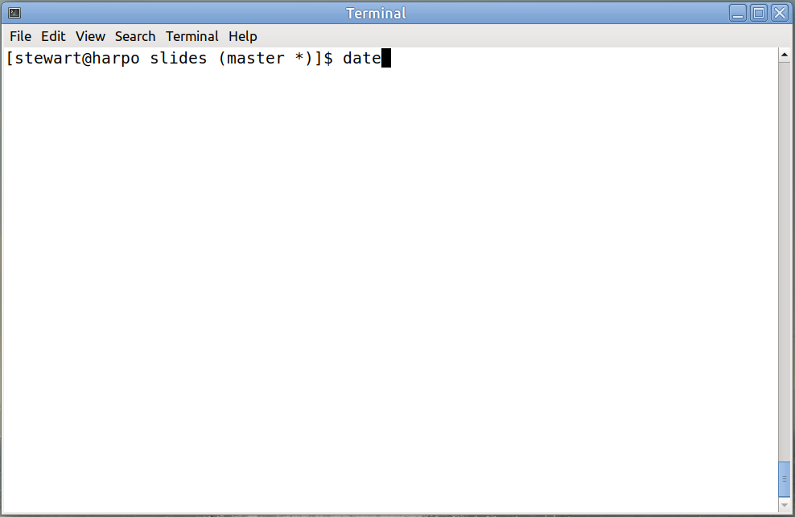 ] .right-column-small[ In Linux, there is an application named .fixedblue[Terminal] that opens a window in which you can run a shell such as .fixedblue[bash]. We can enter the .fixedblue[date] command by typing the word ".fixedblue[date]". ] --- name: terminal-window3 template: terminals count: false .left-column-large[ 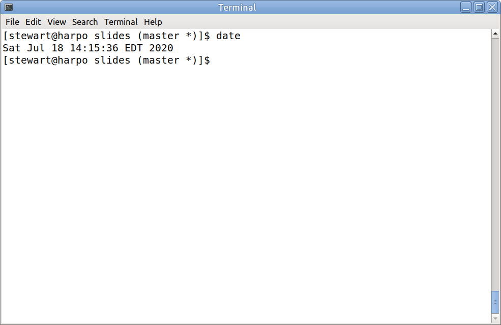 ] .right-column-small[ In Linux, there is an application named .fixedblue[Terminal] that opens a window in which you can run a shell such as .fixedblue[bash]. We can enter the .fixedblue[date] command by typing the word ".fixedblue[date]" followed by newline. The current date and time appears. ] -- .below-column[ Apple systems also have a .greenbold[Terminal] application, and __Windows__ has both the .greenbold[Powershell] and the old standby, .fixedblue[command.exe], in which you can run DOS commands. ] --- name: terminal-activity count: false class: breakout ### A Terminal Activity - Login to .fixedblue[eniac.cs.hunter.cuny.edu] and then login to any of the .fixedblue[cslab] hosts using .fixedblue[ssh]. For example: ```bash ssh cslab12 ``` - Try out these commands: ```bash pwd who ls -a cd /data/biocs/b/student.accounts/cs340_sw/demos pushd ~ popd ``` --- name: command-implementation ### Command Implementation How are the commands that you enter in a CLI, such as .fixedblue[bash], executed? Where is their executable code? -- In UNIX and UNIX-like systems, a command can be implemented in one of two ways: - .greenbold[Within the shell itself], in which case it is called a .bluebold[built-in command]; - For example, in .fixedblue[bash], the .fixedblue[cd] command is a built-in command, as is the .fixedblue[read] command. - .greenbold[In a separate, executable file], in which case it is called a .bluebold[system program]; - For example, in Linux systems, the .fixedblue[grep] and .fixedblue[date] commands are in the files .fixedblue[/bin/grep] and .fixedblue[/bin/date] respectively. -- There are a handful of commands that are implemented in both ways, such as the .fixedblue[echo] , .fixedblue[kill], and .fixedblue[pwd] commands. --- name: command-typing-activity count: false class: breakout ### Learning About Commands - Login to .fixedblue[eniac.cs.hunter.cuny.edu] and then login to any .fixedblue[cslab] host. - Use the .fixedblue[type] command to determine the types of various commands that you know. - Use the .fixedblue[file] command to find the types of the non-built-in commands that you discovered. - Use the .fixedblue[help] command to see a list of the .fixedblue[bash] built-in commands. --- name: gui ### Graphical User Interface The .greenbold[graphical user interface], or .greenbold[GUI], is an alternative user interface to the operating system. It requires a .greenbold[graphical terminal], which can display not just characters, but images. -- .left-column[ The GUI was invented at .greenbold[Xerox PARC], appearing in the Xerox Alto computer in 1973. Previously Ivan Sutherland developed a graphical program called .greenbold[Sketchpad] in 1963. Apple Computers introduced the first GUI as we know it in their .greenbold[Apple Lisa] in 1983 and the .greenbold[Apple Macintosh] in 1984. ] .right-column[ <img src="figures/macintosh_128k.png" width=45% alt="Apple Macintosh"> .sub[1] ] .footnote[ 1 Image from w:User:Grm wnr, CC BY-SA 3.0, https://commons.wikimedia.org/w/index.php?curid=519781 ] -- .below-column[ - A GUI emulates a desktop using a cursor-based window-and-menu system. The contents of the screen are graphical elements such as an active cursor, icons, images, and windows, which can represent files, directories, and applications. - The .greenbold[cursor] is moved by the user with a pointing device such as a .greenbold[mouse] or by voice commands. The cursor is used to execute commands, select elements, draw, etc. - Most systems provide a GUI, such as Microsoft's __Windows__, Apple's __macOS__, and Linux's __Gnome__, or __KDE__. ] --- name: touchscreen ### Touchscreen Interface Keyboards and mice are not feasible input devices for mobile computing devices such as smartphones and tablets, making CLIs and GUIs impractical for them. .left-column[ These devices typically have .greenbold[touchscreens], which are both input and output devices. ] .right-column[ 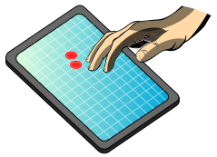 ] .footnote[ Image from User:Willtron, CC BY-SA 1.0, https://commons.wikimedia.org/wiki/File:Multitouch_screen.svg ] .below-column[ Touchscreen devices require a different interface: - actions and selections are based on .greenbold[gestures], which are not single point clicks, but .greenbold[motions], which are represented by location, velocity, and acceleration data. - keyboards are on-screen for text entry - voice commands are supported. ] --- name: batch ### Batch System Monitor A .bluebold[batch processing system] is a type of computer system in which users submit .greenbold[jobs] that can run without user interaction. In modern systems, batch processing jobs are usually computationally intensive and require a large amount resources not usually available on a desktop computer. -- Users interact with a batch processing system through a .bluebold[monitor], which is a program that reads a batch of jobs, schedules the first one on the computer, and runs it. After each job is run, the monitor runs and selects the next job to run. A monitor has a limited interface with a .greenbold[job control language] that allows the user to specify the parameters of the job's run, such as how much disk space, memory, and so on, is needed by the job. A monitor is therefore another type of interface for interacting with the computer system. --- name: system-calls layout: false class: center, middle, inverse ## System Calls We examine system calls, the means by which programs obtain services directly from the kernel. --- template: tinted-slide layout: true --- name: system-calls-1 ### About System Calls A .bluebold[system call] is a call to code inside the kernel of the operating system made via a .greenbold[software interrupt] or .greenbold[trap]. .redbold[It is the means by which a user process explicitly requests a service from the kernel].super[1]. .footnote[ 1 Kernel processes do not make system calls. ] -- - Usually, system calls are not invoked directly from a user program. Instead, the program calls a .greenbold[wrapper function] that invokes that system call. - A .bluebold[wrapper function] is a function whose only purpose is to make a call to another function. It might perform some small amount of work before calling that function and then a bit more work after the call. - In the context of system calls, a .bluebold[wrapper function] is a function whose only purpose is to make the system call. - The wrapper function is part of a user level library and runs in user mode, whereas the actual system call is inside the kernel and runs in kernel mode. --- name: apis ### Application Programming Interfaces An .bluebold[Application Programming Interface] (.bluebold[API]) is a definition or collection of definitions that specify how a program is to obtain the services provided by some other piece of software. In the context of operating systems and the kernel, an API is the set of specifications of functions for obtaining the services of the kernel. -- A programming language needs to provide a means for programs written in that language to obtain kernel services. -- Therefore, programming language libraries usually provide wrapper functions in that language for all system calls. For example, the GNU C library, .fixedblue[glibc], contains wrapper functions for all of the system calls in GNU Linux. This is not to say that every function in that library is a wrapper function. It has other functions too. And it might have functions that make several system calls. But it is true that almost every system call in Linux has a wrapper function in .fixedblue[glibc]. -- The three most common APIs are the - .bluebold[WinAPI] for __Windows__ (.bluebold[Win64] for 64-bit __Windows__), - .bluebold[POSIX API] for POSIX-based systems, which includes virtually all versions of UNIX, Linux, and macOS, and - .bluebold[Java API] for the Java virtual machine (JVM) --- name: posix ### A Bit About POSIX POSIX is an acronym for the .bluebold[Portable Operating System Interface]. You will encounter references to POSIX so often that it merits a brief description here. POSIX is a family of standards specified by the .greenbold[IEEE Computer Society] for maintaining compatibility between operating systems. -- The IEEE official description of it.super[1] states that, > POSIX defines a standard operating system interface and environment, > including a command interpreter (or “shell”), and > common utility programs to support applications portability at the source code level. .footnote[ 1 https://standards.ieee.org/standard/1003_1,2016Edition-0.html ] It was intended originally to define standards for software compatibility with variants of Unix and other operating systems. -- When you write code that uses the POSIX API, it can be run on any POSIX-compliant system. --- name: technicality ### A Subtle Distinction Technically, the function that your program calls to obtain services from the kernel .redbold[is not a system call], but the .redbold[wrapper function defined in the API]. .left-column[ Suppose that .fixedblue[foo()] is a system call. The library will have a wrapper with the same name. Your program will call .fixedblue[foo()], but this will invoke the wrapper, not the actual system call, which is invoked within the wrapper itself. In the illustration to the right, the string .greenbold[.fixed[SYSCALL]] is just a placeholder for the code that would switch to kernel mode and jump to the system call handler. ] .right-column[ 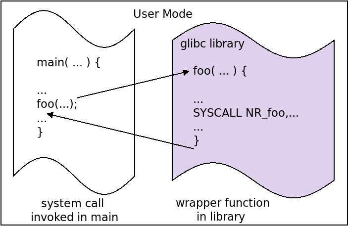 ] -- .below-column[ When we say that a program calls some system call, we mean that it calls the corresponding wrapper function in the user-level library. ] --- name: syscall-example ### Example Using System Calls In Linux, the system call to read from a file is .fixedblue[read()], to write to a file is .fixedblue[write()], to open a file, whether for reading or writing, is .fixedblue[open()], and to create a new file is .fixedblue[creat()].super[1]. .footnote[ 1 This is not a typo; the .fixedblue[creat] call has no 'e' at the end. ] .left-column-small[ The Linux .fixedblue[cp] command has many uses, but the simplest use is to copy an existing file to a new file: .center[ ```bash cp oldfile newfile ``` ] A program that does this, with some pseudocode for error handling, is shown to the right. It makes several system calls, which are highlighted in yellow. ] .right-column-large[ .smaller[ ```C int main(int argc, char *argv[]) { int in_fd, out_fd, n_chars; char buf[256]; /* check args */ if ( argc != 3 ) /* not enough args - report error and exit */ /* open first file and create new one */ if ( (in_fd = `open(argv[1], O_RDONLY)`) == -1 ) /* handle error - cannot open first file */ if ( (out_fd = `creat( argv[2], 0644)`) == -1 ) /* handle error - cannot create new file */ /* copy files */ while ( (n_chars = `read(in_fd , buf, 256)`) > 0 ) if ( `write( out_fd, buf, n_chars )` != n_chars ) /* handle write error */ if ( -1 == n_chars ) /* handle error - Read error from file */ /* close files */ if ( `close(in_fd)` == -1 || `close(out_fd)` == -1 ) /* handle error closing files */ return 0; } ``` ] ] --- name: read-syscall ### The .fixed[read] System Call in UNIX The .fixedblue[read()] system call is a powerful call in UNIX, because it can be used to read from anything that can be mapped to a file, which is to say all devices and files. We use it to demonstrate how you can learn about the Linux API from the manual pages. Type ".fixedblue[man read]" in a terminal to see the beginning of the manual page for it, which provides its API and also shows that the .fixedblue[unistd.h] header file must be included to use it.super[1]: ```C #include <unistd.h> ssize_t read(int fd, void *buf, size_t count); ``` .footnote[ 1 In C, any program that makes a system call must include .fixedblue[unistd.h]. ] The page shows that .fixedblue[read] has three parameters: .lightbluebox[ ```C int fd : an integer file descriptor that identifies the file from which to read void * buf : the address of the first byte of memory into which to store the data size_t count : the number of bytes to be read into the buffer ``` ] It returns a .fixedblue[ssize_t] result, which is the number of bytes actually read. .fixedblue[ssize_t] is a .fixedblue[C] signed integer type. --- name: read-syscall-activity count: false class: breakout ### A .fixedblue[read] System Call Activity - Login to .fixedblue[eniac.cs.hunter.cuny.edu] and then .fixedblue[ssh] into any .fixedblue[cslab] host. - Navigate to the directory .fixedblue[/data/biocs/b/student.accounts/cs340_sw/demos] - There you will find the file .fixedblue[mycp.c], which is a full version of the program from the previous slide that copies one file to another. - Copy the .fixedblue[mycp.c] program into your home directory using the system .fixedblue[cp] command. - Using a simple editor, make the buffer size larger and smaller, recompiling each time and running on some large file. How does buffer size affect running time? You can find large, readable files in <br>.fixedblue[/var/cache/apt/archives]. --- name: syscall-implementation-1 ### System Call Implementation In the first chapter, you learned that when a trap occurs as a result of a system call, the mode bit is switched to kernel mode and a system call handler runs. This handler handles all system calls. The system call handler knows which system call to invoke because each system call has a number associated with it, that is read from a register. (In Linux it is in the .fixedblue[eax] register.) -- The kernel maintains a .greenbold[system call dispatch table] indexed according to these numbers. The table contains the address of the start of each system call in the kernel. The system-call handler invokes the actual kernel function, which runs in kernel mode, and when it is finished, it returns control back to the handler, which returns the exit status of the system call and any return values. -- .redbold[Question:] When a program makes a call such as ```C read(fd, buffer, 256); ``` how are the arguments of this function made available to the kernel? --- name: syscall-parameters ### System Call Parameter Passing There are three general methods for passing the arguments of calls to the kernel in a system call. - .bluebold[Register Method]: The simplest method is to put them into known registers in a specific order. When the number of parameters exceeds the number of available registers, or if the lengths of these parameters exceed the size of the registers, this does not work. - .bluebold[Block Method]: The parameters are stored in a block of consecutive bytes in memory, and the address of the block is passed in a register. - .bluebold[Stack Method]: The parameters are pushed onto the stack by the program and popped off the stack by the kernel. The problem with this is that there are usually two separate stacks - one for the user program and one for the kernel, and popping from one and pushing to the other is painstakingly slow. Neither the block method nor the stack method limits the number of parameters. .lightbluebox[ Linux uses a combination of the register method and the block method. If the parameters fit into the registers, it uses them, otherwise the block method is used. In the current version, Linux does not allow more than six parameters to a system call. ] --- name: syscall-implementation ### Under the Hood: System Calls Different operating systems implement system calls in different ways. We describe how they are implemented in Linux, which is roughly how they are implemented in macOS. The __Windows__ implementation is different. -- The wrapper function for a system call in Linux usually does little more than the following: - It copies the arguments and the unique system call number to the registers where the kernel expects them; - It traps to kernel mode, at which point the system call handler in the kernel does some setup and then invokes system call itself; - It puts an error value in a special variable named .fixed[errno] if the system call returns an error number when the kernel returns the CPU to user mode. Depending on the call, it might do more than this, such as pre-processing the arguments or post-processing results. -- This shows why the wrapper function exists: these actions could not be performed in the kernel itself. If nothing else, the trap to kernel mode must take place outside the kernel! --- name: syscall-complete-flow ### Illustration of the Complete Flow The diagram below depicts the complete control flow, from user mode to kernel mode and back, of a call by a main program to a fictitious system call named .fixedblue[foo]. 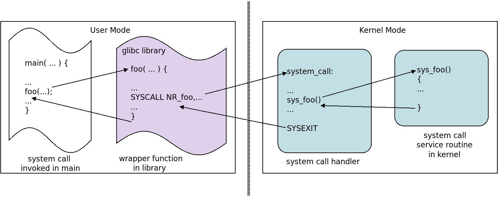 - The code in the .fixedblue[glibc] library is a mix of pseudocode and assembly. The call .fixedblue[SYSCALL] does not really pass the number of the call; it would be in a register. - The system call handler is assembly code and it invokes the actual code in the kernel. The handler has already determined which function it is and the call .fixedblue[syscall_foo()] is just pseudocode - it would be assembly code to jump to that function. --- name: syscall-read ### Flow of .fixed[read] System Call in Linux The following diagram.super[1] depicts the sequence of events that take place when a .fixedblue[C] program calls the Linux .fixedblue[read()] system call. (The compiled call is to .fixedblue[_libc_read()]). .center[ 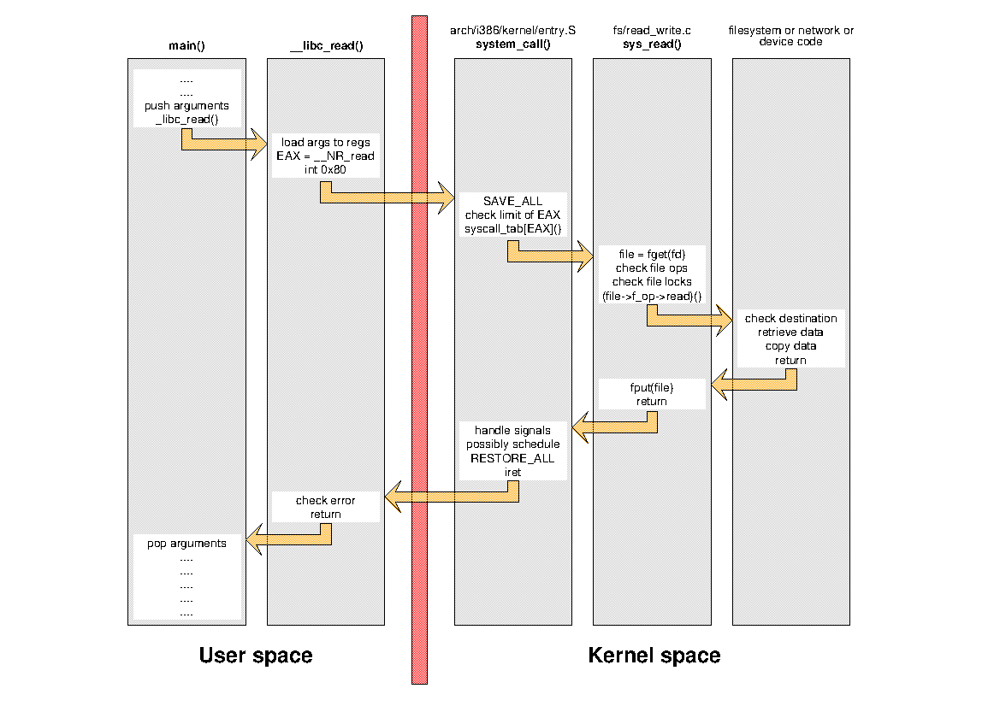 ] .footnote[ 1. by Alessandro Rubini, at http://www.linux.it/~rubini/docs/ksys/ ] --- name: syscall-types ### Categories of System Calls Most operating systems provide a large number of system calls. For example, there are more than four hundred in a typical Linux version. To put some structure around them, we can group most system calls into the following categories: - Process control - File management - Device management - Information maintenance - Communication and synchronization - Protection -- The next few slides briefly describe the calls in each category. --- name: process-syscalls ### Process Control The most important types of services provided by system calls related to process control fall into these subcategories: - creating and terminating processes - loading and executing processes - getting and setting process attributes - waiting for events - signaling events - registering signal actions, setting signal handling properties - allocating and freeing memory -- Processes and the kernel's support for them is the subject of Chapters 3 and 4 (.greenbold[threads].) --- name: file-syscalls ### File Management The most important types of services provided by system calls related to file management fall into these subcategories: - creating and deleting files and directories - linking and renaming files - opening and closing files - duplication of file descriptors - reading and writing files - repositioning read/write pointers - getting and setting file attributes -- File systems and the kernel's support for them is the subject of Chapters 13, 14, and 15. We will barely scrape the surface of this material in this course. --- name: device-syscalls ### Device Management The most important types of services provided by system calls related to device management fall into these subcategories: - requesting and releasing devices - reading and writing devices - getting and setting device attributes - logically attaching and detaching devices -- Chapters 11 and 12 cover mass storage systems and I/O. --- name: info-syscalls ### Information Management Some system calls perform services that are more administrative, the kind that only privileged users would use, such as setting the system clock. Some types of services falling into this category are: - getting and setting time or date - getting and setting system timers - getting and setting system data, such as host information, network information, etc. - getting accounting and performance information, such as CPU usage, memory usage -- We do not cover this topic further. --- name: user-syscalls ### User and Group Management Another group of administrative services relates to users and groups of users. Some types of services falling into this category are: - creating and removing users - creating, modifying, and deleting groups - getting and setting user information (ids, privilege levels, etc) - changing passwords -- There is some overlap here with security and system administration, but again this is material we will not cover. --- name: communication-syscalls ### Communication and Synchronization Operating systems provide various means by which processes and users can exchange information, i.e., communicate. There are many system calls that fall into this category. The major ones are: - creating and deleting communication connections between processes - sending and receiving messages - setting up inter-process communication - setting up inter-process synchronization resources - transferring status information - attaching and detaching remote devices -- These topics are covered in Chapters 5 and 6. --- name: protection-syscalls ### Protection Different operating systems provide varying levels of protection. There are some system calls that most support, related to the following categories: - protection of files and directories - protection of memory - protection of devices and other resources -- Protection is barely covered in this course. --- name: system-programs layout: false class: center, middle, inverse ## System Programs This section explores system programs, which are standalone programs that are often distributed as part of an operating system installation, extending its utility and functionality. --- template: tinted-slide layout: true --- name: sys-programs ### About System Programs Recall from Chapter 1 ([System Programs](chapter01.html#system-programs)) that: > .bluebold[System programs] are typically programs shipped or > downloaded when the operating system is installed. and that almost all such programs can only be invoked as commands on the command line in a terminal window. -- But not every program that can be run from the command line is a system program. For example, we can run the .greenbold[Firefox web browser] from the command line: ```bash $ firefox ``` and it is an .redbold[application], not a system program. -- .redbold[When is a program an application and when is it a system program?] -- The distinction is fuzzy. --- name: sysprograms-apps ### System Programs versus Applications Clearly, word processors, game programs, spreadsheets, web browsers, and integrated development environments are applications. Equally clearly, shell programs, linkers and loaders, commands that allow you to manipulate files, check the status of running processes, terminate rogue processes, check for memory leaks, etc., are system programs. -- System programs are usually thought of as those programs that extend the functionality of the operating system and that make it convenient to develop software on the system. --- name: sysprog-app-activity count: false class: breakout ### System Program or Application - Pick a partner or partners and have one person name a program or application and the other will decide whether it is an application or a system program using the criteria mentioned in the preceding slide. - Do you both agree? If not, why not? What is unclear? - Examples worth discussing: text editors such as .fixedblue[vi], IDEs such as .fixedblue[Eclipse], and packages such as .fixedblue[git]. --- name: sysprog-categories ### Categorizing System Programs It is difficult to categorize all system programs, but generally speaking, we can lump them into some large groups as follows. Some examples in Linux are given. - .greenbold[File and directory manipulation] - creation, deletion, modification, printing, renaming, copying, checking and changing attributes - .greenbold[Status information] - obtaining system information such as time, date (.fixedblue[date]), resource utilization (.fixedblue[memusage]), process status (.fixedblue[ps]), device status - .greenbold[Software development] - compilers (.fixedblue[gcc]), linkers (.fixedblue[ld]), assemblers (.fixedblue[as]), interpreters and shells (.fixedblue[bash]), debuggers (.fixedblue[gdb]), tracers, profilers, version control, etc --- name: sysprog-categories-1 ### Categorizing System Programs (2) - .greenbold[Program loading and execution] - absolute loaders, relocatable loaders, dynamic linker/loaders (.fixedblue[ld-linux]), object dumpers (.fixedblue[objdump]), signal tracers (.fixedblue[strace]), etc. - .greenbold[Communication and network services] - remote logins (.fixedblue[ssh]), communicating with servers (.fixedblue[curl]), remote file transfer (.fixedblue[sftp],.fixedblue[scp]), send messages to a screen (.fixedblue[write]) - browsers, email clients, and such are applications, not system software. - .greenbold[Background services] - services that run in the background include ssh daemons (.fixedblue[sshd]), printer daemons (.fixedblue[lpd], .fixedblue[cupsd]), various other network daemons, and so on. They are started up at boot time and usually remain running until shutdown. --- name: prog-development ### Program Development We turn our attention to a special collection of software tools - namely those used for program development. .redbold[Why do we single these out?] -- - Although computers now are used more by non-programmers than programmers, the earliest users were programmers, and much of system software design was targeted towards making program development environments as productive as possible. -- - Program development tools such as .greenbold[editors], .greenbold[pre-processors], .greenbold[compilers], .greenbold[linkers], .greenbold[debuggers], .greenbold[profilers], and .greenbold[dynamic linker/loaders] have long been integrated into operating system packages. -- - Understanding all of the steps that turn source code into a running process makes it easier to understand the reasons for many decisions in the design of operating systems. --- name:libraries ### Software Libraries Most programs are built from multiple source code files and also contain code that references one or more .greenbold[libraries]. - A .bluebold[software library], also called a .bluebold[program library], is a file containing compiled code and possibly data that can be used by other programs. - .redbold[A library is not a stand-alone executable] – you can not “run” a library. It typically contains functions, type definitions, and constants that other programs can use. - You have been using software libraries since your very first “Hello World” program, whether you knew it or not. Whatever function that you used to print on the screen was contained in a library, most likely either the C standard I/O library (if you used .fixedblue[printf], for instance), or the C++ .fixedblue[iostreams] library. --- name: compiling ### Steps in Building an Executable: Compilation Suppose that the program to be build consists of the following files: ```bash main.c utilities.c mathstuff.c io.c ``` and the only dependencies among these files are that .fixedblue[main.c] contains references to symbols in al of the other source code files. Suppose also that there are external dependencies: .fixedblue[io.c] contains calls to the .fixedblue[C] standard library and .fixedblue[mathstuff.c] makes calls to the .fixedblue[C] math library. The first step is to compile all source code files to produce corresponding .redbold[relocatable] object files as follows: ```bash gcc -c main.c gcc -c utilities.c gcc -c mathstuff.c gcc -c io.c ``` which, assuming no errors, creates ```bash main.o utilities.o mathstuff.o io.o ``` --- name: linking ### Steps in Building an Executable: Linking, Part 1 The file .fixedblue[main.o] is not executable, and it contains references to symbols in the other files that are not resolved. (For example, .fixedblue[main()] might call .fixedblue[output()] in .fixedblue[io.c] but in .fixedblue[main.o] there is no jump to this function yet; it is just a placeholder for a jump.) Similarly, .fixedblue[mathstuff.o] and .fixedblue[io.o] have unresolved symbols whose definitions are in .fixedblue[C] libraries. The purpose of .greenbold[linking] is to combine these relocatable object files into a single binary executable file, replacing all unresolved references by actual addresses. This will usually require including the library files that contain the definitions needed by the program, such as the math library file. In theory we need to run the linker, passing the arguments ```bash main.o utilities.o mathstuff.o io.o ``` .redbold[as well as the names of all libraries to be included]. --- name: linking-2 ### Steps in Building an Executable: Linking, Part 2 Fortunately, most compilers, including .fixedblue[gcc], will determine from the command line arguments that only the linker needs to be run, so to link these files and create the executable program, we can run .fixedblue[gcc] again, specifying the name .fixedblue[myprog] for the output file and supplying it with explicit instructions to link in the math library: ```bash gcc -o myprog main.o utilities.o mathstuff.o io.o `-lm` ``` - The highlighted part is the instruction to link to the math library.super[1]. .footnote[ 1 The math library in POSIX systems is named .fixedblue[libm.a] or .fixedblue[libm.so] and the name passed to the .fixedblue[-l] option is the part of the name between ".fixedblue[lib]" and the period, hence just ".fixedblue[m]". ] - We do not need to tell .fixedblue[gcc] to link to the .fixedblue[C] standard library, because it will do this by default. - .fixedblue[gcc] combines and links all files, resolving the references. - It also links the required libraries into the executable, perhaps at this point in time, or possibly at run-time when the libraries are actually needed. Which does it do? -- .redbold[It depends.] --- name: dynamic-linking ### Steps in Building an Executable: Dynamic Linking A .bluebold[loader] is a program that loads a binary executable file into memory. The loader places the executable in memory and assigns final addresses to all program code and data so that it can run correctly in the location at which it was loaded. This is possible because its code is .greenbold[relocatable code]. In older systems, the default was that the libraries were combined into the program executable by the linker when it created the executable. This is call .bluebold[static linking]. Modern systems usually default to linking libraries at run-time, which is called .bluebold[dynamic linking]. There are two copies of a library, a statically-linkable and a dynamically-linkable copy. In UNIX, static libraries end in ".fixedblue[.a]" and dynamic libraries, called .greenbold[shared objects], end in ".fixedblue[.so]". E.g, .fixedblue[libm.a] and .fixedblue[libm.so]. Modern Linux defaults to dynamic linking. Hence ```bash gcc -o myprog main.o utilities.o mathstuff.o io.o -lm ``` causes the linker to include stubs in the executable so that when a call to the math library is executed, the math library is loaded into memory if it is not already there, and the addresses are resolved, and then the jump is made. --- name: dynamic-vs-static ### Dynamic versus Static Linking Why is dynamic linking preferred, and why does the UNIX world call these dynamically linkable libraries "shared objects"? -- .redbold[The answers are related]. -- - Without dynamic linking, every process has a copy of the library embedded in it. This means that each process takes up more memory and more disk space, so memory and disk contain multiple copies of many libraries. -- - Because the process's size is larger, it takes longer to load. -- - Because each process is larger, fewer processes can be in memory at a time, reducing the ability of the operating system to keep the CPU busy at all times. -- In a later chapter, you will see that these dynamically linkable libraries can be designed so that the code is shareable (it is read-only), so only one copy in memory is needed. Advantages of dynamic linking are thus: - faster load time - better use of memory, keeping process code smaller. - when libraries change, the programs do not need recompilation or rebinding. --- name: dynamic-vs-static-2 ### Advantages of Static Linking - Executables whose libraries are all statically linked are portable - they can be run on any machine with the same architecture - because they do not require the presence in memory of the exact library that they were compiled against. - Statically-linked programs are faster. There is a performance cost in references to shared library routines of about eight machine cycles per reference.super[1]. .footnote[ 1 IBM Knowledge Center. https://www.ibm.com/support/knowledgecenter/en/ssw_aix_71/performance/when_dyn_linking_static_linking.html ] - There are other minor advantages that are related to concepts of virtual memory, a topic we will cover in a later chapter. --- name: build-visualized ### From Source to Executable, Visualized .left-column-small[ The figure to the right summarizes the steps that take place to create an executable from source code, with all of its dependencies, and run it. Various system programs are used to achieve this, such as compilers, linkers, and loaders. ] .right-column-large[ 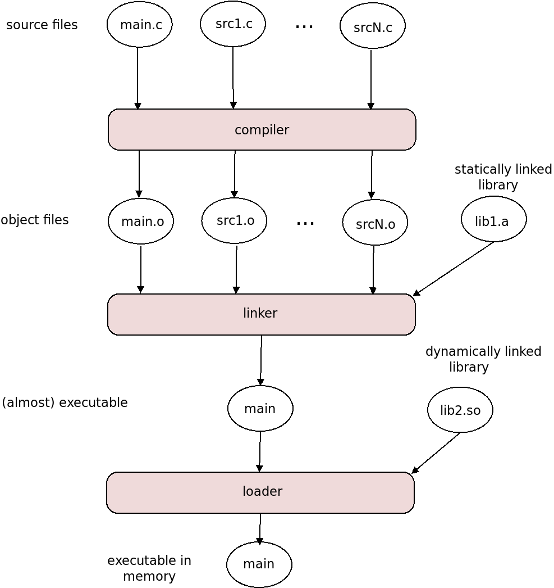 ] --- name: portability ### Portability .redbold[An executable built on one system is not likely to be executable on another system.] -- Each operating system has a binary format for applications that dictates the layout of the header, instructions, and variables. -- - The standard format for executable and relocatable files in Linux is .bluebold[ELF], short for .bluebold[Executable and Linkable Format]. There are two different formats, one for files that are executable and one for files that can be linked into executables such as library files. - __Windows__ systems use the .bluebold[Portable Executable] (.bluebold[PE]) format, and macOS uses the .bluebold[Mach-O] format. -- Applications are built against .bluebold[API]s, which specify how the source code should be written. But applications built on a given machine make system calls to that machine's kernel, and contain machine code output by the compiler for the given architecture. The ELF does not specify that the code must be for a specific computer architecture. This means that the compiler and linker can produce an executable that complies with the ELF but not that the code can run on different hardware platforms. -- .bluebold[Portability] is the extent to which an application is able to run on multiple platforms. --- name: portability-solutions ### Solutions to Creating Portable Executables 1. Compile and link according to an .bluebold[ABI]: - An .bluebold[Application Binary Interface] (.bluebold[ABI]) is the architecture equivalent of an API - it defines how the components of the binary code can interface with a given kernel and CPU architecture. - This is not done very much. 1. Write the code in an interpreted language such as Python. Such code runs slowly. 1. Write code in a language that uses a virtual machine, such as the Java Runtime Environment. Again, these programs are slower. 1. The application can be ported manually to each operating system on which it will run. This is time consuming and must be redone for each new version of the application. --- name: opsys-design layout: false class: center, middle, inverse ## Operating System Design and Implementation We give a brief overview of the design and implementation of existing operating systems. --- template: tinted-slide layout: true --- name: opsys-design ### Operating System Design Operating system design has been much less a scientific endeavor than an engineering one. An operating system is caught between the conflicting requirements of the users, the hardware platform, the system developers who must design, create, and maintain the software, and the maintainers who must operate and maintain the system every day. -- The hardware affects the design greatly: - The Android and iOS operating systems are designed for small, low-power, mobile, touch screen devices such as smartphones. - macOS is designed for Apple's desktop, laptop, and home computers, and much development effort was put into its graphical user interfaces. - UNIX was designed to run on hardware with support for dual-mode initially, which influenced its protection policies and mechanisms, whereas early __Windows__ systems were designed for processors without dual-mode support, which led to a radically different design. Thus, the internal structures of operating systems vary greatly as a result of their different requirements. --- name: design-principles ### Design Principles Various laws and principles have been used in the design of operating systems (and other large software) over the years. Some of these are excerpted from [1]. .footnote[ 1 Peter Denning. "Fifty Years of Operating Systems", _CACM_ March 2016. V. 59 (3) ] -- - .bluebold[Information hiding]:<br> Separating the methods that implement a particular component from the design of that component itself makes system maintenance and modification easier. -- - .bluebold[Levels or layers of abstraction]:<br> System software can be simplified and verified by organizing the functions as a hierarchy that can make only downward calls and upward returns. -- - .bluebold[Virtual machines]:<br> A set of related functions can be implemented as a simulation of a machine whose interface is an “instruction set” and whose internal structure and data are hidden. -- - .bluebold[Principle of least privilege]:<br> In a particular abstraction layer of a computing environment, every enitity (process, user, program, etc.) must have only the privilege needed to access only the information and resources that are necessary for its legitimate purpose. -- - .bluebold[Principle of locality]:<br> Processes use small subsets of their address spaces for extended periods. --- name: unix-derivatives ### How Systems Evolve Changes in requirements lead to different operating systems. As an example, look at this subset of the different operating systems derived from the original UNIX, written by Ken Thompson and Dennis Ritchie in 1969. .center[ 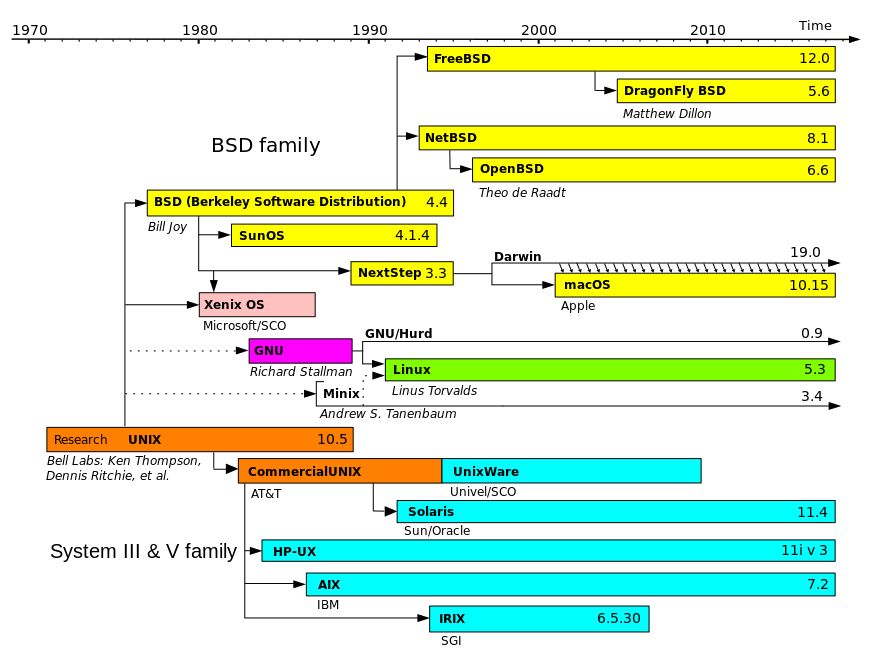 ] .footnote[ Figure by Guillem, Wereon, Hotmocha Christoph S. Redrawn from Image:Unix.png, https://commons.wikimedia.org/w/index.php?curid=1667764. License: In the public domain. ] --- name: mechanism-policy ### Mechanisms and Policies A .bluebold[policy] is a set of rules that, under prescribed conditions, .redbold[guides and determines present and future decisions]. A .bluebold[mechanism] is a process, technique, or system for .redbold[achieving a result]. -- Policies state .redbold[what] things must be done, whereas mechanisms describe .redbold[how] to do them. - Requiring that user processes must not execute certain instructions is a policy. - Using a hardware mode bit and traps is a mechanism. -- In any software engineering endeavor, .redbold[separation of policy from mechanism is a very important principle]. In operating system design, this principle plays an important role. -- It is best if mechanisms are flexible enough to work across a range of policies. If so, - When a policy changes, the mechanism may only need adjustments. - Mechanisms can be changed without needing to change policies. -- Microsoft did not make the separation in __Windows__: mechanism and policy are tied together in the system to enforce their global "look and feel". In contrast, Linux is an open source operating system; anyone can make changes to how various features are implemented, i.e., change mechanisms, and can propose changes to what parts of the system should do. --- name: implementation ### Programming Languages for Implementation .redbold[In what languages are operating systems written?] -- Early operating systems were written in assembly language. That changed over time. -- The first operating system to be written exclusively in a high-level language (ESPOL) was the .bluebold[Burroughs MCP], in 1961. Others followed in PL1 and other systems languages. -- UNIX was the first operating system to be implemented in .fixedblue[C]. -- Now, most operating systems are written in a mix of assembly and .fixedblue[C] and/or .fixedblue[C++]. - The kernel is usually written in assembly and .fixedblue[C]. (Android and Linux are examples.) - The libraries are written in .fixedblue[C] and/or .fixedblue[C++]. - Some systems programs are also written in scripting languages such as PERL, Python, and shell languages such as .fixedblue[bash]. -- The drawback of implementing an operating system in a higher level language is reduced speed, although two facts ameliorate this: - compilers have gotten very good at optimizing code, and - modern processors use hyper-threading to reduce the effects of memory delays caused by dependencies in the code. --- name: opsys-structure ### Operating System Structure By the .bluebold[structure] of an operating system, we mean the arrangement and interrelationships among its separate .redbold[executable modules]. The question is not how its .greenbold[source code files] are written and organized, but about how the binary files are interrelated. - The system could be in a single file, using a single address space. - It could be in multiple files, designed in such a way that they form a sequence of layers or rings. - It could be designed using very small files, each interacting with each other using message-passing. --- name: monolithic-1 ### Monolithic Structure: UNIX The simplest structure is a .bluebold[monolithic] one: - All of the functionality of the kernel is in a single, static binary file that runs in a .redbold[single address space]. - Early versions of UNIX were monolithic, as were early versions of Linux. The structure of the original UNIX operating system is diagrammed below. .center[ 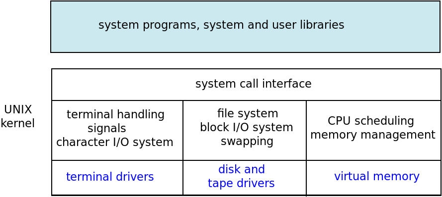 ] The three levels in the kernel correspond roughly to what calls what: calls go from higher components to lower ones. --- name: monolithic-2 ### Monolithic Structure: Linux Linux is also monolithic, but it also uses dynamically loadable kernel modules, described soon. The division of tasks and layering are roughly the same as the original UNIX system. The much more detailed illustration below of the structure of the Linux kernel is based on the description of it in _Modern Operating Systems_ by Andrew Tanenbaum. .center[ 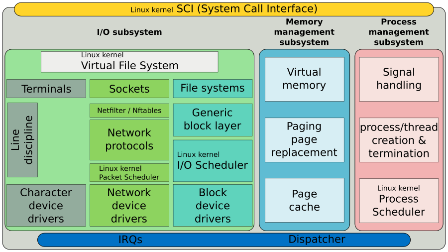 ] .footnote[ Image by ScotXW. CC BY-SA. https://upload.wikimedia.org/wikipedia/commons/6/65/Simplified_Structure_of_the_Linux_Kernel.svg ] --- name: layered ### Layered or Ring Structure In a layered structure, the operating system is divided into a number of .greenbold[layers], with successively higher layers built upon and dependent upon lower layers. Equivalently, this structure can be viewed as a set of .greenbold[concentric rings], with outer rings built upon and dependent upon inner rings. We prefer the ring visualization. .left-column[ The innermost ring, called .greenbold[ring 0], is the hardware; the outermost ring is the set of user interfaces. In between are the drivers, kernel, and so on. There are no commercial operating systems that adhere to this model strictly, and there are no commercial operating systems in which each ring is in its own address space. But the idea of rings has been used as a design principle, often only with respect to principles of protection. .fixedblue[Multics] was such a system, for example. ] .right-column[ 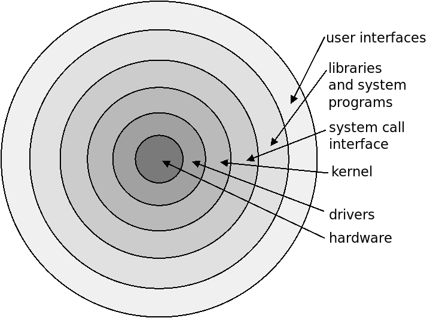 ] --- name: unix-rings ### UNIX as a Ring Structure UNIX was created by computer scientists who worked on the MULTICS project and decided it was too complex. But they borrowed ideas from it. .left-column[ Early UNIX can be viewed as having a ring structure, as shown to the right. The kernel is in Ring 0, devices drivers and the system call interface, in Ring 1. The file system, network services, and other services, were in Ring 2. User processes are not part of the operating system, and are shown outside the outermost ring. The shell programs and other utilities that run in user mode are also outside. ] .right-column[ 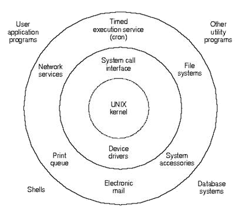 ] --- name: microkernel-foundation ### Microkernel Foundations Operating systems started out small. -- Over the years, they grew larger and larger, because new device drivers, protocol stacks, file systems and other low-level systems were incorporated into the monolithic kernel. -- The disadvantage of incorporating these services into a single large kernel is that modifying them requires careful work to prevent side effects in the kernel, and being able to start and stop services without changes to the state of the kernel requires design changes within the kernel itself. -- And large kernels are also hard to maintain in general. -- In 1969, Danish/American computer scientist __Per Brinch Hansen__ and his team of developers created the .bluebold[RC 4000 Multiprogramming System] using principles that a decade later would be called a .bluebold[microkernel design]. -- The idea was to make the kernel as small as possible, but containing only absolutely essential functionality that needed to run in privileged mode. All other functionality was put into separate programs that ran in user mode, communicating through message-passing. --- name: microkernel-advantages ### Benefits of Microkernels The advantages of creating a microkernel with only essential functions and everything else in separate programs, rather than creating a large monolithic kernel, are that: -- - it is easier to extend a microkernel-based operating system because much of the extension would be in separate programs rather than inside the kernel; -- - it is easier to port the operating system to new architectures because there is less code to modify; -- - it is more reliable because the kernel is smaller and easier to debug and maintain; -- - it is more secure because the smaller kernel is easier to analyze for security flaws, and satisfies .redbold[the principle of least privilege]. --- name: microkernels ### The Early Microkernels The earliest microkernel had an _inter-process communication system_, _process scheduling_, and _memory management_. .redbold[All other services, such as file systems, device drivers, and application interface, were in user-space processes], as illustrated below: .center[ 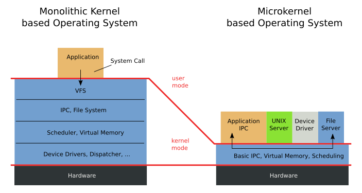 ] .footnote[ Image in the Public Domain, from https://commons.wikimedia.org/wiki/File:OS-structure.svg ] -- One example of an early microkernel operating system was .bluebold[MINIX], designed and built by __Andrew S. Tanenbaum__, a professor of computer science at the _Vrije Universiteit Amsterdam_ in the Netherlands. MINIX 1.0 was a UNIX-derived operating system designed to run on the Intel 8088 processor, and was .greenbold[system-call compatible] with .bluebold[Seventh Edition Unix]. Its source code was in his book, _ Operating Systems: Design and Implementation_. --- name: microkernel-activity count: false class: breakout ### The Torvalds-Tanenbaum Debate - Read about the Torvalds-Tanenbaum debate in at [Wikipedia](https://en.wikipedia.org/wiki/Tanenbaum%E2%80%93Torvalds_debate). Since it is a lot of reading, just read the section entitled "The Debate". - What were the major disagreements? - Were they settled? --- name: microkernels-modern ### Modern Microkernels .redbold[The Mach Microkernel]. The most well-known example of a microkernel-based operating system today is the .bluebold[Mach] kernel, which was developed at .bluebold[Carnegie Mellon University] and is used in several operating systems, the most well known being .bluebold[macOS]. The Mach kernel is like the earlier ones, in that the kernel contains an IPC mechanism, memory management, and a process scheduler, and most everything else is in user-space programs that interact with the kernel through message-passing. All communication takes place between user modules using message passing. -- .redbold[Other Microkernels]. There are other operating systems based on microkernels. One, inspired by earlier ones, is .bluebold[Redox], an open source, Unix-based operating system written in .fixedblue[Rust]. It can be found on [Github](https://github.com/redox-os/redox). -- Another is .bluebold[sel4], a high-assurance, high-performance operating system microkernel. It is a formally verified microkernel, available as open source on [GitHub](https://github.com/seL4/) It is supported by the [seL4 Foundation](https://sel4.systems/Foundation/About/). --- name: modules ### Loadable Kernel Modules An alternative that offers a compromise between microkernels and monolithic systems is to use .greenbold[loadable kernel modules]. The idea is to keep the kernel small, but not as small as a microkernel. The kernel provides core services, and the other services are loadable dynamically as needed, while the kernel is running. The other services are provided in kernel modules, which are executable files that can be loaded and linked into the kernel at run-time. Linux uses loadable kernel modules for a variety of services, ranging from device drivers to file systems to cryptographic services. They can be inserted into and removed from the kernel from the command line. --- name:hybrids ### Hybrid Operating Systems Most operating systems are hybrids of two or more models. For example, Linux is a monolithic system but it also uses loadable kernel modules. __Windows__ operating systems are mostly monolithic but provides support for separate subsystems (which they call .greenbold[operating-system personalities]) that run as user-mode processes. Some operating systems were created as hybrids, the most notable example being .bluebold[macOS] and .bluebold[iOS]. macOS is a complex, partially layered system, built on top of the .greenbold[Darwin] kernel. Darwin is the core of macOS, consisting of an open source Mach microkernel and elements of FreeBSD UNIX. It is an open-source, mostly .greenbold[POSIX-compliant], Unix-like operating system. --- name: macos-x ### macOS The macOS architecture is layered. The GUI is the top layer. Below that are various APIs used by programs to communicate with lower layers, such as .greenbold[Cocoa], .greenbold[BSD], and .greenbold[Quicktime]. The Darwin kernel is the core, and is composed of a microkernel and elements of BSD. .center[ 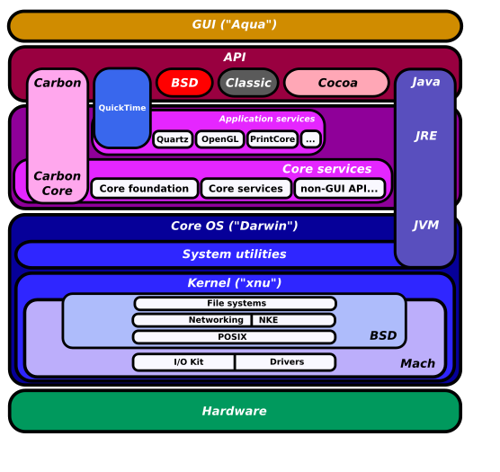 ] .footnote[ Image from User: Sassospicco, CC BY-SA 3.0, https://commons.wikimedia.org/w/index.php?curid=879049 ] --- name: system-startup layout: false class: center, middle, inverse ## System Start-Up Answering the question, "what happens between turning on power and being able to login to a computer?' --- template: tinted-slide layout: true --- name: system-boot ### Bootstrapping the System: Loading the Kernel When power is turned on, the operating system kernel must eventually be loaded into memory and run. .redbold[How does the hardware know where the kernel is or how to load that kernel?] -- The process of starting a computer by loading the kernel is called as .bluebold[bootstrapping] or just .bluebold[booting] the system. Several distinct steps tale place to boot a system. -- 1. When a machine is powered on, execution starts at a small .greenbold[boot loader] at a fixed location in nonvolatile firmware, either the .greenbold[BIOS] in older systems, or .greenbold[UEFI] (.greenbold[Unified Extensible Firmware Interface]) in newer systems. -- 1. The boot loader usually runs diagnostic tests such as inspecting memory and the CPU and discovering devices. If all tests pass, it loads a second boot loader, which is located at a fixed disk location called the .bluebold[boot block]. -- 1. The program stored in the boot block loads the kernel into memory. - The Linux kernel image is a compressed file that must be extracted after it is loaded into memory. Being compressed makes loading faster. - .bluebold[GRUB] is an open source bootstrap program for Linux and UNIX systems. Boot parameters are in a GRUB configuration file, and GRUB allows changes to be made at boot time, such as selecting which kernel to load. --- name: system-boot-2 ### Bootstrapping the System: After Kernel Load After the kernel is loaded, the bootstrap program transfers control to it. - What happens next is kernel-dependent. Most systems will load drivers, start services, and eventually display a user interface to allow users to login. - The Linux kernel loads necessary drivers, switches the root file system from a temporary RAM location to the actual root file system location. - It then creates the initial process, .fixedblue[systemd], in the system, and then starts servers such as web servers, ssh servers, print services, and so on. - Eventually, it displays a login prompt. --- name: references ### References 1. Daniel P. Bovet, Marco Cesati. _Understanding the Linux Kernel_, 3rd Edition. O'Reilly, 2006. 1. Abraham Silberschatz, Greg Gagne, Peter B. Galvin. _Operating System Concepts_, 10th Edition. Wiley Global Education, 2018. 1. The GNU Operating System. https://www.gnu.org/